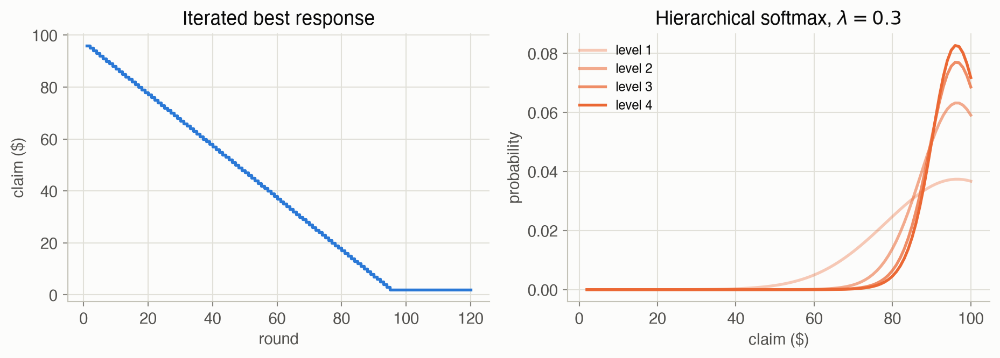
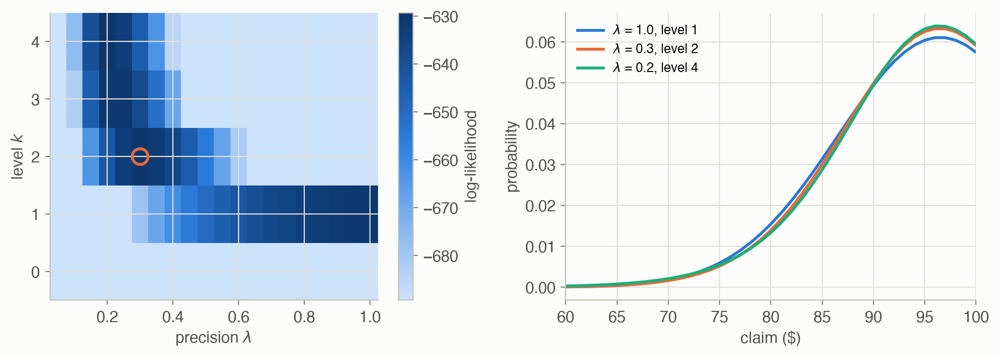
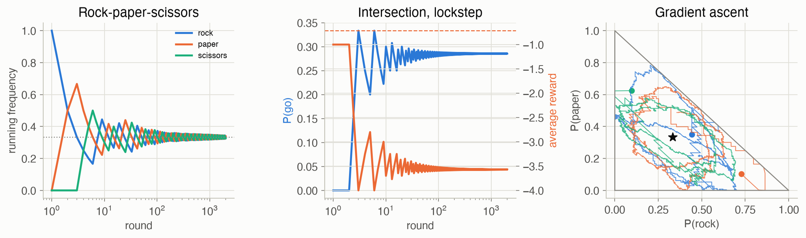

24 · Multiagent Reasoning
Part V — Multiagent Systems
Big picture
Where this chapter fits
Parts I–IV had one decision maker facing an uncertain world. Now there are several, each with its own rewards, choosing at the same time. The world’s response to your action depends on what the others do, and they are reasoning about you too. This chapter covers the simplest setting, a simple game: one round, no states, every agent acts at once and is paid. Chapter 25 adds states, Chapter 26 adds partial observability, and Chapter 27 considers agents with a shared goal.
The question: when your reward depends on other agents’ choices, what counts as a good policy, and how do you compute or learn one?
The short answer: there’s no single “optimal” policy; instead there are equilibria, joint policies from which no agent wants to deviate.
- A best response is the best policy against fixed policies of the others.
- A Nash equilibrium is a joint policy where everyone is best-responding. One always exists, but it may be random, there may be several, and they are hard to compute.
- A correlated equilibrium lets a shared signal (a traffic light) coordinate the agents, and is found by linear programming.
- Agents can also learn by repeated play: best response, fictitious play, gradient ascent. Behavioral models describe how real people play.
The key ideas at a glance
A simple game has agents \(i = 1, \dots, k\), each with actions \(\mathcal{A}^i\), and a reward \(R^i(\boldsymbol{a})\) for each agent that depends on the joint action \(\boldsymbol{a} = (a^1, \dots, a^k)\). A policy \(\pi^i\) is a distribution over agent \(i\)’s actions; a random one is called a mixed strategy.
Best response and dominance. Given the others’ policies, a best response maximizes your expected reward. An action that is a best response to everything the others might do is dominant. In the prisoner’s dilemma, defecting is dominant for both, so both defect, though both would be better off cooperating.
Nash equilibrium. A joint policy where every agent is best-responding to the others. Every finite game has one (Nash, 1951), possibly random, as in rock-paper-scissors; many games have several. Computing one is hard in general, and numerical solvers can stop at approximate ones.
Correlated equilibrium. A single distribution over joint actions, like a traffic light telling each driver what to do, such that no agent gains by disobeying its recommendation. It can reach payoffs no Nash equilibrium reaches (at the intersection, a fair split), and it is computed by a linear program.
Learning and behavior. Agents can reach equilibria by adapting: best-responding in turn, best-responding to observed frequencies (fictitious play), or following the gradient of their own reward. None of these is guaranteed to converge. To predict people, a softmax response makes costly mistakes rarer than cheap ones, and a hierarchical softmax stacks levels of reasoning about others.
Vocabulary
| Term | Plain meaning |
|---|---|
| Simple game (normal-form game) | One round of simultaneous choices, with a reward for every agent |
| Joint action \(\boldsymbol{a}\) | Everyone’s action together |
| Pure / mixed strategy | A deterministic / random policy |
| Zero-sum game | The rewards always add up to zero: one agent’s gain is another’s loss |
| Best response | The best policy against fixed policies of the others |
| Dominant strategy | A best response whatever the others do |
| Nash equilibrium | Everyone best-responds to everyone else |
| Correlated equilibrium | A joint-action distribution no agent wants to disobey |
| Regret (here) | The most an agent could gain by switching alone; 0 at a Nash equilibrium |
| Fictitious play | Best-respond to the frequencies of what the others have played |
| Level-\(k\) reasoning | Assume the others reason one level less deeply than you |
After this chapter you can
- Write down a simple game, compute expected rewards, and find best and softmax responses.
- Find dominant strategies and Nash equilibria of small games, including mixed ones, by indifference.
- Set up and solve the linear program for a correlated equilibrium, and choose among several by an objective.
- Run iterated best response, fictitious play and gradient ascent, and recognize cycling and miscoordination.
- Fit a hierarchical softmax model to observed choices, and know which of its parameters data can pin down.
Intuition
TipAnalogy
Two drivers reach an empty intersection at the same moment. If one goes and the other waits, the one who goes saves a little time. If both go, they nearly crash. If both wait, they both waste time. There’s no right answer for one driver alone: what’s best depends on what the other does. A traffic light solves the problem, not by being clever, but by telling each driver what to do in a way both are happy to obey.
We use four games:
- The prisoner’s dilemma (Appendix F.10): cooperate or defect.
- Rock-paper-scissors (F.11): zero-sum.
- The traveler’s dilemma (F.12): claim an amount from $2 to $100; the lower claim wins a $2 bonus.
- The intersection, this site’s problem: go or stop.
All are in the problem gallery: the book’s games and the intersection.
| Prisoner’s dilemma | cooperate | defect |
|---|---|---|
| cooperate | −1, −1 | −4, 0 |
| defect | 0, −4 | −3, −3 |
| Intersection | go | stop |
|---|---|---|
| go | −10, −10 | 3, 0 |
| stop | 0, 3 | −1, −1 |
Best response, and when it’s enough
If driver 2 goes with probability \(q\), driver 1’s expected reward is \(3 - 13q\) for going and \(q - 1\) for stopping, so driver 1 should go when \(q\) is below \(2/7\) and stop otherwise. That’s a best response. In the prisoner’s dilemma, defecting is best whatever the other does (0 > −1 and −3 > −4): a dominant strategy. See Equation 2.
Nobody wants to switch: Nash equilibria
The intersection has three Nash equilibria. Two are pure: one driver goes and the other stops. The third is mixed: each goes with probability 0.286 (that is, 2/7), exactly the value that leaves the other indifferent. The mixed one is worth −0.714 to each: better than both waiting (−1), but far worse than taking turns. Rock-paper-scissors has only a mixed equilibrium: play each action a third of the time. See Equation 4.
Learning by playing
Agents that don’t know the equilibrium can learn by playing repeatedly. In the traveler’s dilemma, each round of best responses undercuts the last by $1, and the claims fall all the way to the Nash equilibrium of $2 by round 95. In rock-paper-scissors, best responses chase each other forever: rock, paper, scissors, rock, … . Fictitious play best-responds to observed frequencies instead; in the intersection, two drivers who start alike stay alike, going together and stopping together. Their frequencies approach the mixed equilibrium, but they earn −3.57 per round. See Equation 6.
How people actually play
In experiments, many people playing the traveler’s dilemma claim near the top of the range, not the minimum (K. Basu, American Economic Review, 1994; C. M. Capra, J. K. Goeree, R. Gomez and C. A. Holt, American Economic Review, 1999). A hierarchical softmax model explains this: a player who reasons a couple of levels deep, and makes cheap mistakes more often than costly ones, claims about $91 on average (precision 0.3, level 2). See Equation 3.
Formalism
Simple games and utilities
A simple game (ADM §24.1) has agents \(\mathcal{I} = \{1, \dots, k\}\), joint actions \(\boldsymbol{a} \in \mathcal{A} = \mathcal{A}^1 \times \dots \times \mathcal{A}^k\) and rewards \(R^i(\boldsymbol{a})\). If agents act independently with policies \(\pi^j\), agent \(i\)’s expected reward is
\[ U^i(\boldsymbol{\pi}) = \sum_{\boldsymbol{a} \in \mathcal{A}} R^i(\boldsymbol{a}) \prod_{j \in \mathcal{I}} \pi^j(a^j) \tag{1}\]
In words. Average agent \(i\)’s reward over all joint actions, weighting each by how likely it is when every agent chooses independently.
Term by term.
- \(R^i(\boldsymbol{a})\): agent \(i\)’s reward when the agents play \(\boldsymbol{a}\).
- \(\prod_j \pi^j(a^j)\): the probability of \(\boldsymbol{a}\), since the choices are independent.
- We write \(\boldsymbol{a} = (a^i, \boldsymbol{a}^{-i})\) and \(\boldsymbol{\pi} = (\pi^i, \boldsymbol{\pi}^{-i})\), where \(-i\) means “everyone but \(i\)”.
Why it holds. It’s the expectation of \(R^i\) under the product distribution of independent choices.
Best and softmax responses
\[ \pi^i \text{ is a best response to } \boldsymbol{\pi}^{-i} \iff U^i(\pi^i, \boldsymbol{\pi}^{-i}) \ge U^i(\pi^{i\prime}, \boldsymbol{\pi}^{-i}) \text{ for all } \pi^{i\prime} \tag{2}\]
A pure best response is \(\arg\max_{a^i} U^i(a^i, \boldsymbol{\pi}^{-i})\).
In words. Against fixed opponents, the game is just a single-agent decision: pick the action with the highest expected reward.
Term by term.
- \(U^i(a^i, \boldsymbol{\pi}^{-i})\) is Equation 1 with \(\pi^i\) putting all its weight on \(a^i\).
- A mixed policy is a best response only if every action it uses has the highest expected reward, so some pure action is always a best response.
- Dominant: a best response to every \(\boldsymbol{\pi}^{-i}\); it’s enough to check every pure \(\boldsymbol{a}^{-i}\).
Why it holds. \(U^i\) is linear in \(\pi^i\), so its maximum over the simplex is at a vertex: a pure action.
People aren’t perfect optimizers. The softmax (logit, quantal) response (ADM §24.2.2; R. D. McKelvey and T. R. Palfrey, Games and Economic Behavior, 1995) makes each action more likely the better it is:
\[ \pi^i(a^i) \propto \exp\big(\lambda\, U^i(a^i, \boldsymbol{\pi}^{-i})\big) \tag{3}\]
In words. Better actions are exponentially more likely; how much more depends on the precision \(\lambda\).
Term by term.
- \(\lambda = 0\): every action equally likely. \(\lambda \to \infty\): the best response.
- Mistakes that cost little are common; mistakes that cost a lot are rare.
- Hierarchical softmax (level-\(k\); D. O. Stahl and P. W. Wilson, 1994): level 0 plays uniformly; level \(k\) softmax-responds to everyone else playing level \(k - 1\).
Why it holds. It’s a model, not a theorem. It is the choice rule of an agent who adds independent, Gumbel-distributed noise to each action’s value and then picks the best, a standard model of noisy choice.
Dominant strategy and Nash equilibria
\[ \boldsymbol{\pi} \text{ is a Nash equilibrium} \iff U^i(\boldsymbol{\pi}) \ge U^i(a^i, \boldsymbol{\pi}^{-i}) \text{ for every agent } i \text{ and action } a^i \tag{4}\]
In words. Nobody can gain by changing their own policy while the others keep theirs.
Term by term.
- Each agent’s policy is a best response (Equation 2) to the others’.
- Checking pure deviations \(a^i\) suffices, since \(U^i\) is linear in \(\pi^i\).
- Regret here is \(\max_i \big(\max_{a^i} U^i(a^i, \boldsymbol{\pi}^{-i}) - U^i(\boldsymbol{\pi})\big)\), which is zero exactly at an equilibrium.
- In a mixed equilibrium, every action an agent uses must have the same expected reward (otherwise it would drop the worse one). That indifference condition is how small games are solved by hand.
Why it holds. Every finite game has at least one Nash equilibrium (J. Nash, Annals of Mathematics, 1951), by a fixed-point argument on the best-response map. Finding one is PPAD-complete (C. Daskalakis, P. W. Goldberg and C. H. Papadimitriou, 2009), so no polynomial-time algorithm is known.
As an optimization problem (ADM eq. 24.5):
\[ \min_{\boldsymbol{\pi},\, U}\ \sum_i \big(U_i - U^i(\boldsymbol{\pi})\big) \quad \text{s.t.}\quad U_i \ge U^i(a^i, \boldsymbol{\pi}^{-i})\ \ \forall i, a^i, \qquad \pi^i \text{ distributions} \]
The constraints force \(U_i\) above every action’s value; the objective pulls it down to the policy’s own value. The minimum, 0, is attained exactly at Nash equilibria. The products of policies make it nonconvex, so the page’s solver (SciPy’s SLSQP, several starts) can stop at local solutions. For two-agent games with few actions, support enumeration finds every equilibrium exactly: guess which actions each agent uses, solve the indifference equations, and check the rest.
Learning in repeated play
Iterated best response (ADM §24.6) has every agent best-respond to the others’ previous policies. It converges in some games (for example potential games) and cycles in others.
Fictitious play (ADM §24.8; G. W. Brown, 1951; J. Robinson, Annals of Mathematics, 1951) has each agent \(i\) count how often each other agent \(j\) played each action, and best-respond to the frequencies:
\[ \hat{\pi}^j(a^j) = \frac{N^i(j, a^j)}{\sum_{a'} N^i(j, a')}, \qquad a^i_t = \arg\max_{a^i} U^i(a^i, \hat{\boldsymbol{\pi}}^{-i}) \tag{6}\]
In words. Assume each opponent is a random player who plays actions as often as they have been seen so far, and best-respond to that.
Term by term.
- \(N^i(j, a^j)\): agent \(i\)’s count of how often \(j\) played \(a^j\), usually started at 1.
- \(\hat{\pi}^j\) is the maximum likelihood estimate of \(j\)’s policy (Chapter 16), treating it as fixed.
- The actions played are always pure; it’s the frequencies that may converge to a mixed equilibrium.
Why it holds. If the frequencies converge, their limit is a Nash equilibrium: each agent’s frequent actions are best responses to the others’ limiting frequencies. Robinson proved convergence for two-agent zero-sum games; in general it can fail.
Gradient ascent (ADM §24.9) nudges each policy along the gradient of its own reward. If the others are assumed to repeat their last actions, the gradient is simply \(R^i(\cdot, \boldsymbol{a}^{-i}_t)\) (ADM eq. 24.12; M. Zinkevich, ICML, 2003). The policy then moves by \(\alpha_t\) times that gradient, with \(\alpha_t \propto 1/\sqrt{t}\), and is projected back onto the probability simplex (Chapter 23).
Worked example
The mixed equilibrium of the intersection
Let driver 2 go with probability \(q\). For driver 1:
- going earns \(-10\,q + 3\,(1 - q) = 3 - 13q\);
- stopping earns \(0 \cdot q + (-1)(1 - q) = q - 1\).
Driver 1 is willing to mix only if these are equal: \(3 - 13q = q - 1\), so \(q = 4/14 = 2/7\). By symmetry driver 1 also goes with probability \(2/7\), and each earns \(q - 1 = -5/7 \approx -0.714\).
Support enumeration finds 3 equilibria; the mixed one has P(go) = 0.2857 for both, worth −0.7143 each.
That beats both drivers always waiting (−1 each), but it is far worse than taking turns: with probability \((2/7)^2 \approx 0.08\) both go and nearly crash, and with probability \((5/7)^2 \approx 0.51\) both wait.
Checking the traffic light
The light recommends (go, stop) or (stop, go), each with probability \(1/2\). Check driver 1’s constraints (Equation 5):
- Told “go” (so driver 2 was told “stop”): obeying earns 3; stopping instead earns −1. Obey.
- Told “stop” (driver 2 goes): obeying earns 0; going instead earns −10. Obey.
The same holds for driver 2, so it is a correlated equilibrium, worth \(\tfrac12 \cdot 3 + \tfrac12 \cdot 0 = 1.5\) to each.
The egalitarian linear program returns π = [0.0, 0.5, 0.5, 0.0] over (go, go), (go, stop), (stop, go), (stop, stop), worth 1.500 and 1.500. The utilitarian objective instead picks (go, stop) outright: total 3.0, but all of it to driver 1.
A softmax response by hand
In rock-paper-scissors, suppose the opponent plays rock, paper, scissors with probabilities 0.5, 0.3, 0.2. Your expected rewards are: rock \(0.2 - 0.3 = -0.1\); paper \(0.5 - 0.2 = 0.3\); scissors \(0.3 - 0.5 = -0.2\). With precision \(\lambda = 2\), the softmax response is proportional to \(e^{-0.2}, e^{0.6}, e^{-0.4}\):
The code: rock 0.247, paper 0.550, scissors 0.202. Paper, the best response, is most likely, but not certain.
Interactive
Repeated play
Choose a game and a learning rule, then step through 200 rounds. The bars show each agent’s policy after the chosen round (for fictitious play, the frequencies each agent has observed of the other). The readout shows the average reward so far.
Algorithms & code
Responses, equilibria and learning
def action_values(game, policies, i) -> Array:
"""U^i(a_i, pi^-i) for every action a_i of agent i.
R[i] has one axis per agent. Contract every other agent's axis with
its policy, from the last axis down, so the axis numbers stay valid.
"""
Ri = game.R[i]
for j in reversed(range(len(policies))):
if j != i:
Ri = np.tensordot(Ri, policies[j], axes=([j], [0]))
return Ri
def utility(game, policies, i) -> float:
"""eq. 24.1: agent i's expected reward under independent policies."""
return float(action_values(game, policies, i) @ policies[i])
def best_response(game, policies, i) -> Array:
"""eq. 24.3: a deterministic best response (ties: lowest index)."""
n = game.R.shape[i + 1]
return np.eye(n)[np.argmax(action_values(game, policies, i))]
def softmax_response(game, policies, i, lam) -> Array:
"""eq. 24.4: pi^i(a) proportional to exp(lam U^i(a, pi^-i))."""
u = lam * action_values(game, policies, i)
p = np.exp(u - u.max()) # subtract the max: exp can't overflow
return p / p.sum()
def regret(game, policies) -> float:
"""The most any one agent could gain by switching alone: 0 exactly at
a Nash equilibrium."""
return max(action_values(game, policies, i).max()
- utility(game, policies, i) for i in range(len(policies)))
def dominant_actions(game, i) -> list:
"""Actions of agent i that are a best response to every pure joint
action of the others (so to every mixed one too)."""
# Rows: agent i's actions; columns: every joint action of the others.
Ri = np.moveaxis(game.R[i], i, 0).reshape(game.R.shape[i + 1], -1)
return [a for a in range(len(Ri)) if np.all(Ri[a] >= Ri.max(axis=0))]
def nash_equilibrium(game, rng, starts=10):
"""eq. 24.5 by SLSQP from random starts: minimize sum_i (U_i - U^i(pi))
subject to U_i >= U^i(a_i, pi^-i) for every action. Returns the best
run's policies and its regret (0 at an equilibrium)."""
sizes = game.R.shape[1:]
cuts = np.cumsum(sizes)[:-1]
k = len(sizes)
def unpack(z): # z = [pi^1, ..., pi^k, U_1..U_k]
return np.split(z[:-k], cuts), z[-k:]
def objective(z):
pis, U = unpack(z)
return sum(U[i] - utility(game, pis, i) for i in range(k))
def gaps(z): # >= 0 when no action beats U_i
pis, U = unpack(z)
return np.concatenate([U[i] - action_values(game, pis, i)
for i in range(k)])
cons = [{"type": "ineq", "fun": gaps}]
cons += [{"type": "eq", "fun": lambda z, i=i: unpack(z)[0][i].sum() - 1}
for i in range(k)]
bounds = [(0, 1)] * sum(sizes) + [(None, None)] * k
best = None
for _ in range(starts):
pis0 = [rng.dirichlet(np.ones(n)) for n in sizes]
U0 = [action_values(game, pis0, i).max() for i in range(k)]
z0 = np.concatenate(pis0 + [np.array(U0)])
res = minimize(objective, z0, method="SLSQP", bounds=bounds,
constraints=cons,
options={"maxiter": 500, "ftol": 1e-12})
pis = [np.clip(p, 0, None) for p in unpack(res.x)[0]]
pis = [p / p.sum() for p in pis]
r = regret(game, pis)
if best is None or r < best[1]:
best = (pis, r)
return best
def support_enumeration(game, tol=1e-9) -> list:
"""Every Nash equilibrium of a nondegenerate two-player game, exactly.
For each pair of equal-size supports, solve for the mixes that make
the other agent indifferent across its support; keep the solution if
the mixes are valid and no outside action does better. Exponential in
the number of actions: for validating small games only.
"""
A, B = game.R[0], game.R[1] # rows = agent 1's action
n1, n2 = A.shape
found = []
def indifferent(M, rows, cols):
"""Mix x over `rows` making x @ M[rows][:, cols] constant (v)."""
s = len(rows)
lhs = np.zeros((s + 1, s + 1))
# One equation per column c: sum_r x_r M[r, c] - v = 0.
lhs[:s, :s] = M[np.ix_(rows, cols)].T
lhs[:s, s] = -1
lhs[s, :s] = 1 # and the mix sums to 1
rhs = np.zeros(s + 1)
rhs[s] = 1
try:
return np.linalg.solve(lhs, rhs)[:s]
except np.linalg.LinAlgError:
return None
for s in range(1, min(n1, n2) + 1):
for S1 in combinations(range(n1), s):
for S2 in combinations(range(n2), s):
# Agent 1 mixes to make agent 2 indifferent, and vice versa.
xs = indifferent(B, list(S1), list(S2))
ys = indifferent(A.T, list(S2), list(S1))
if xs is None or ys is None or min(xs.min(), ys.min()) < -tol:
continue
x, y = np.zeros(n1), np.zeros(n2)
x[list(S1)], y[list(S2)] = xs, ys
new = not any(np.allclose(x, fx) and np.allclose(y, fy)
for fx, fy in found)
if regret(game, [x, y]) <= 1e-7 and new:
found.append((x, y))
return found
def correlated_equilibrium(game, objective="utilitarian", agent=0) -> Array:
"""eq. 24.8 by linear programming; returns pi[a1, ..., ak], a
distribution over joint actions. Objectives (Table 24.1):
"utilitarian" (total reward), "egalitarian" (the worst-off agent),
"dictatorial" (agent `agent`), or a weight vector w (maximize
sum_i w_i U^i: used to trace the payoffs equilibria can reach)."""
k, shape = game.R.shape[0], game.R.shape[1:]
joints = list(np.ndindex(*shape))
n = len(joints)
rows = []
# For each agent i, recommendation a_i and alternative b: the gain
# from switching to b, over the joint actions that recommend a_i, <= 0.
for i in range(k):
for ai in range(shape[i]):
for b in range(shape[i]):
if b == ai:
continue
row = np.zeros(n)
for idx, a in enumerate(joints):
if a[i] == ai:
alt = a[:i] + (b,) + a[i + 1:]
row[idx] = game.R[(i,) + alt] - game.R[(i,) + a]
rows.append(row)
rows = np.array(rows)
# U[i, joint]: agent i's reward for each joint action.
U = np.array([[game.R[(i,) + a] for a in joints] for i in range(k)])
if objective == "egalitarian":
# Variables (pi, t): maximize t with t <= every agent's reward.
c = np.concatenate([np.zeros(n), [-1.0]])
A_ub = np.vstack([np.hstack([rows, np.zeros((len(rows), 1))]),
np.hstack([-U, np.ones((k, 1))])])
b_ub = np.zeros(len(rows) + k)
A_eq = np.concatenate([np.ones(n), [0.0]])[None, :]
bounds = [(0, None)] * n + [(None, None)]
else:
if isinstance(objective, str):
w = np.ones(k) if objective == "utilitarian" else np.eye(k)[agent]
else:
w = np.asarray(objective, dtype=float)
c = -(w @ U) # linprog minimizes
A_ub, b_ub = rows, np.zeros(len(rows))
A_eq, bounds = np.ones((1, n)), [(0, None)] * n
res = linprog(c, A_ub=A_ub, b_ub=b_ub, A_eq=A_eq, b_eq=[1.0],
bounds=bounds, method="highs")
return np.clip(res.x[:n], 0, None).reshape(shape)
def iterated_best_response(game, k_max, policies=None) -> list:
"""§24.6: all agents best-respond at once to the others' previous
policies. Returns the joint policy after each round (0 = start)."""
policies = uniform_policies(game) if policies is None else policies
history = [policies]
for _ in range(k_max):
policies = [best_response(game, policies, i)
for i in range(len(policies))]
history.append(policies)
return history
def hierarchical_softmax(game, lam, k, policies=None) -> list:
"""§24.7: level 0 plays uniformly; level k softmax-responds (precision
lam) to everyone else playing level k - 1."""
policies = uniform_policies(game) if policies is None else policies
for _ in range(k):
policies = [softmax_response(game, policies, i, lam)
for i in range(len(policies))]
return policies
def fictitious_play(game, k_max, counts=None) -> dict:
"""§24.8: each agent counts the others' actions (eq. 24.9) and best-
responds to those frequencies (ties: lowest index). counts[i][j] is
agent i's count vector for agent j (default: ones). Returns each
round's actions and each agent's model of the others."""
k, sizes = game.R.shape[0], game.R.shape[1:]
if counts is None:
N = [[np.ones(sizes[j]) for j in range(k)] for _ in range(k)]
else:
N = [[np.array(c, dtype=float) for c in row] for row in counts]
actions, models = [], []
for _ in range(k_max):
model = [[N[i][j] / N[i][j].sum() for j in range(k)]
for i in range(k)]
a = [int(np.argmax(action_values(game, model[i], i)))
for i in range(k)]
for i in range(k): # everyone sees the joint action
for j in range(k):
N[i][j][a[j]] += 1
actions.append(a)
models.append(model)
return {"actions": np.array(actions), "models": models}
def gradient_ascent_play(game, k_max, rng, policies=None, rate=1.0):
"""§24.9: each agent samples an action, then steps its policy along
R^i(., a^-i), the gradient if the others repeat their last action
(eq. 24.12), with step rate / sqrt(t), and projects back onto the
simplex. Returns the joint policy after each round."""
if policies is None:
policies = uniform_policies(game)
policies = [np.array(p, dtype=float) for p in policies]
history = [policies]
for t in range(1, k_max + 1):
a = [rng.choice(len(p), p=p) for p in policies]
new = []
for i, p in enumerate(policies):
# Others as their last actions (one-hot); agent i as itself.
others = [np.eye(len(q))[a[j]] for j, q in enumerate(policies)]
others[i] = p
step = rate / np.sqrt(t) * action_values(game, others, i)
new.append(project_simplex(p + step))
policies = new
history.append(policies)
return historyusing ADM, LinearAlgebra
g = intersection() # R[i, a1, a2]; actions 1 = go, 2 = stop
# Expected reward of each of agent i's actions, when the other plays policy p.
action_values(g, i, p) = i == 1 ? g.R[1, :, :] * p : g.R[2, :, :]' * p
# Correlated equilibrium (eq. 24.8) with ADM's simplex method: maximize
# total reward subject to "obeying is no worse" for every recommendation.
# Adding a constant to all rewards changes no constraint, and makes every
# reward positive, so maximizing pushes Σπ up to its limit of 1.
function correlated_equilibrium(g)
n1, n2 = size(g.R, 2), size(g.R, 3)
R = g.R .- minimum(g.R) .+ 1
joint = [(a1, a2) for a1 in 1:n1 for a2 in 1:n2] # π's variables
rows = Vector{Float64}[]
for (i, n) in ((1, n1), (2, n2)), ai in 1:n, b in 1:n
b == ai && continue
# Gain from switching ai → b, over joint actions that recommend ai.
push!(rows, [a[i] != ai ? 0.0 :
R[i, (i == 1 ? (b, a[2]) : (a[1], b))...] - R[i, a...]
for a in joint])
end
A = vcat(reduce(vcat, permutedims.(rows)), ones(1, length(joint)))
rhs = [zeros(length(rows)); 1.0] # gains ≤ 0, Σπ ≤ 1
c = [R[1, a...] + R[2, a...] for a in joint]
return Dict(zip(joint, simplex_max(c, A, rhs)))
end
light = correlated_equilibrium(g)
total = sum(p * (g.R[1, a...] + g.R[2, a...]) for (a, p) in light)
println("utilitarian correlated equilibrium: total reward ", round(total; digits = 3))
@assert isapprox(total, 3.0; atol = 1e-9)
# Fictitious play with identical starting counts: the drivers move in lockstep.
function fictitious_play(g, rounds)
N = [ones(2), ones(2)] # N[j]: counts of agent j's actions
acts = Tuple{Int,Int}[]
for _ in 1:rounds
a1 = argmax(action_values(g, 1, N[2] / sum(N[2])))
a2 = argmax(action_values(g, 2, N[1] / sum(N[1])))
N[1][a1] += 1; N[2][a2] += 1
push!(acts, (a1, a2))
end
return acts
end
acts = fictitious_play(g, 2000)
go = count(a -> a[1] == 1, acts) / length(acts)
println("P(go) = ", round(go; digits = 3), ", lockstep: ", all(a -> a[1] == a[2], acts))
@assert abs(go - 2 / 7) < 0.01 && all(a -> a[1] == a[2], acts)
NoteReading the Python code
np.tensordot(Ri, p, axes=([j], [0]))sums agent \(j\)’s axis of the reward array against its policy. Doing this for every other agent leaves a vector over agent \(i\)’s own actions: Equation 2’s \(U^i(a^i, \boldsymbol{\pi}^{-i})\).np.ndindex(*shape)walks every joint action as a tuple, like nested loops.linprogminimizes, so maximization objectives are negated.A_ub @ x <= b_ubholds the “obeying is no worse” constraints of Equation 5.minimize(..., method="SLSQP")handles the nonconvex Nash program: it finds a local solution, so the code tries several random starts and keeps the one with the smallest regret.
Run them
game = intersection()
print("dominant strategies:", G.dominant_strategy_equilibrium(game))
for x, y in G.support_enumeration(game):
print("Nash:", np.round(x, 3), np.round(y, 3))
light = G.correlated_equilibrium(game, "egalitarian")
print("traffic light:", np.round(light.ravel(), 3), G.correlated_utilities(game, light))dominant strategies: None
Nash: [1. 0.] [0. 1.]
Nash: [0. 1.] [1. 0.]
Nash: [0.286 0.714] [0.286 0.714]
traffic light: [0. 0.5 0.5 0. ] [1.5 1.5]Results
What equilibria can achieve at the intersection

- The three Nash equilibria give (3, 0), (0, 3) and (−0.714, −0.714). Only the pure ones are efficient, and each favors one driver.
- The correlated equilibria (blue) reach exactly the triangle whose corners are the three Nash equilibria. So in this game, a correlated equilibrium is a public coin flip among Nash equilibria. That’s still worth having: the traffic light’s (1.5, 1.5) is on the efficient edge and fair, which no single Nash equilibrium is.
Iterated best response and the traveler’s dilemma

- Best responses unravel. Against uniform claims, the best claim is $96. Against any claim \(c\), the best response is \(c - 1\) (earning \(c + 1\)). So each round undercuts the last by $1, reaching the unique Nash equilibrium of $2 at round 95, where both earn $2.
- Levels of reasoning don’t unravel. With precision 0.3, the mean claim is $84 at level 1, $91 at level 2 and $93 at level 4. Undercutting by $1 gains little, and the softmax model’s noise keeps high claims attractive.
- A numerical solver can stop far away. Started at random, SLSQP on the Nash program returned policies with regret 4.4e-07: nobody could gain more than that by deviating. Yet its most likely claim is $51, and each traveler expects $51.88. It is an approximate equilibrium, held up by tiny probabilities on high claims. The exact equilibrium, $2, is unique.
Can behavior data pin down the model?

Across 30 simulated datasets of 200 claims each, maximum likelihood recovered the true level in only 9 of 30. The fits spread along a ridge: a low precision at a high level predicts nearly the same claims as a high precision at level 1. The mean claims of the three pairs on the right are $90.9, $91.2 and $91.1. To separate depth of reasoning from precision, you need data from several different games.
Fictitious play and gradient ascent

- Fictitious play finds the mixed equilibrium of rock-paper-scissors in frequency. After 2000 rounds from equal counts, the frequencies are within 0.008 of a third; from 100 random starting counts, the median largest gap was 0.014. The actions themselves cycle in ever-longer runs.
- Converging frequencies aren’t converging play. At the intersection, two drivers with identical counts make identical choices every round. Their frequency of going approaches 0.285 (the mixed equilibrium’s 2/7), but every round is a near-crash or a double wait: −3.57 per round, against −0.714 for independent mixing. With random starting counts, 99 of 100 runs settled into a pure equilibrium, one driver always going.
- Gradient ascent keeps circling in rock-paper-scissors. After 2000 rounds, the three runs still had regret 0.32, 0.56, 0.38: the policies drift around the uniform equilibrium rather than settling at it. At the intersection, all 20 of 20 runs reached a pure equilibrium.
Solved problems
Problem 1: dominance. In a game, agent 1 chooses up or down, agent 2 left or right. Agent 1’s rewards are (up, left) 4, (up, right) 1, (down, left) 3, (down, right) 0. Agent 2’s are 2, 3, 1, 5 in the same order. Does either agent have a dominant strategy? What will they play?
TipSolution
Agent 1: up beats down against both (4 > 3 and 1 > 0), so up is dominant. Agent 2: against up it prefers right (3 > 2), and against down also right (5 > 1), so right is dominant too. Both play their dominant strategies: (up, right), with rewards (1, 3). Check that it is a Nash equilibrium: agent 1 would get 0 by switching, agent 2 would get 2.
Problem 2: a mixed equilibrium. A penalty kicker aims left or right; the goalkeeper dives left or right. The kicker scores with probability 0.9 if the keeper dives the wrong way, 0.4 if the keeper guesses right (either side). Rewards are the scoring probability for the kicker and its negative for the keeper. Find the equilibrium.
TipSolution
Let the keeper dive left with probability \(p\). Kicking left scores \(0.4p + 0.9(1 - p)\), kicking right \(0.9p + 0.4(1 - p)\). Indifference gives \(p = 1/2\). By symmetry the kicker also aims left half the time. The kicker scores \(0.65\) on average. No pure equilibrium exists: any predictable choice is exploited.
Problem 3: check a correlated equilibrium. At the intersection, a light shows (go, stop) with probability 0.4, (stop, go) 0.4 and (stop, stop) 0.2. Is it a correlated equilibrium, and what does each driver earn?
TipSolution
Driver 1 told “go” (probability 0.4, always facing “stop”): obey 3, deviate −1. Fine. Told “stop” (probability 0.6: driver 2 goes with probability \(0.4/0.6\), stops with \(0.2/0.6\)): obeying earns \(\tfrac{2}{3}\cdot 0 + \tfrac{1}{3}(-1) = -\tfrac13\); going earns \(\tfrac23(-10) + \tfrac13 \cdot 3 = -\tfrac{17}{3}\). Obey. By symmetry it is a correlated equilibrium. Each earns \(0.4 \cdot 3 + 0.4 \cdot 0 + 0.2 \cdot (-1) = 1.0\): worse than the traffic light (1.5), because it sometimes wastes a round.
Problem 4: fictitious play by hand. Two agents play the prisoner’s dilemma with fictitious play, counts starting at 1. What do they play in the first three rounds, and why does fictitious play settle immediately here?
TipSolution
With counts (1, 1), each models the other as 50/50 and computes cooperate: \(0.5(-1) + 0.5(-4) = -2.5\); defect: \(0.5 \cdot 0 + 0.5(-3) = -1.5\). Both defect. The counts become (1, 2), so each thinks the other defects 2/3 of the time, and defecting is still better; it always will be, since defecting is dominant: it’s best against any belief. Fictitious play reaches the dominant strategy equilibrium in round 1 and stays.
Problem 5: how long does unraveling take? In the traveler’s dilemma, if both travelers start at $100 and best-respond to each other each round, when do they reach $2?
TipSolution
Against a claim of \(c > 2\), claiming \(c - 1\) earns \(c + 1\), the most possible: claiming \(c\) earns \(c\), and claiming lower earns at most \(c\). So both claim $99 in round 1, $98 in round 2, …, $2 in round 98. Against $2, the best response is $2 (claiming $2 earns $2, anything higher earns $0). The page’s run started from uniform play, whose best response is $96, so it took 95 rounds.
Recap
- With several agents, “optimal” becomes “equilibrium” (Equation 2, Equation 4). Why it matters: every later chapter in Part V asks the same question, in richer settings: which joint policies leave no agent wanting to deviate?
- Nash equilibria always exist, but may be random, multiple, inefficient and hard to compute (Equation 4). Why it matters: the prisoner’s dilemma and the intersection show that self-interested best responses can leave everyone worse off; numerical solvers can stop at approximate equilibria.
- Correlated equilibria coordinate through a shared signal, and are computed by a linear program (Equation 5). Why it matters: the traffic light earns each driver 1.5, against −0.71 for the mixed Nash equilibrium; mediated coordination is often both fairer and more efficient.
- Learning dynamics can reach equilibria, but can also cycle or miscoordinate (Equation 6). Why it matters: agents that learn from play are the multiagent version of reinforcement learning (Chapter 25’s Nash Q-learning builds on this), and convergence is the exception rather than the rule.
- Behavioral models predict people better than equilibria do (Equation 3). Why it matters: systems that interact with humans need a predictive model of them. But depth of reasoning and precision trade off, so one game’s data can’t separate them.
Cheat sheet & connections
| Name | Formula | Ref |
|---|---|---|
| Utility | \(U^i(\boldsymbol{\pi}) = \sum_{\boldsymbol{a}} R^i(\boldsymbol{a}) \prod_j \pi^j(a^j)\) | Equation 1 |
| Best response | \(\arg\max_{a^i} U^i(a^i, \boldsymbol{\pi}^{-i})\) | Equation 2 |
| Softmax response | \(\pi^i(a^i) \propto \exp(\lambda U^i(a^i, \boldsymbol{\pi}^{-i}))\) | Equation 3 |
| ★ Nash equilibrium | \(U^i(\boldsymbol{\pi}) \ge U^i(a^i, \boldsymbol{\pi}^{-i})\) for all \(i, a^i\) | Equation 4 |
| ★ Correlated equilibrium | \(\sum_{\boldsymbol{a}^{-i}} [R^i(a^i, \boldsymbol{a}^{-i}) - R^i(a^{i\prime}, \boldsymbol{a}^{-i})]\,\pi(a^i, \boldsymbol{a}^{-i}) \ge 0\) | Equation 5 |
| Fictitious play | best-respond to \(\hat{\pi}^j \propto N(j, \cdot)\) | Equation 6 |
Common pitfalls
- Expecting one right answer. Games can have several equilibria; say which one, and why (an objective, a convention, a learning rule).
- Trusting a solver’s “equilibrium”. Check the regret, and remember that a small regret doesn’t mean the policies are near an exact equilibrium.
- Confusing frequency convergence with policy convergence. Fictitious play’s frequencies can match an equilibrium while the actual play is disastrous.
- Treating people as Nash players. In the traveler’s dilemma the equilibrium predicts $2; people claim near $100.
- Over-interpreting fitted behavioral parameters. Level and precision are hard to separate from one game’s data.
Connections
- Ch 6 · Simple Decisions: the single-agent version (maximize expected utility), and bounded rationality.
- Ch 15 · Exploration and Exploitation: softmax action selection.
- Ch 16 · Model-Based Methods: maximum likelihood models, used by fictitious play.
- Ch 23 · Controller Abstractions: projection onto the simplex, used by gradient ascent.
- Ch 25 · Sequential Problems: games with states: Markov games and Nash Q-learning.
- Appendix C · Computational Complexity: computing a Nash equilibrium is PPAD-complete, which is why this page searches numerically on small games.